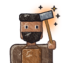
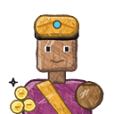

Who lives in the towns, what they do with their day, and how you talk, trade and fall out with them. The square below runs a whole day on world time, which only moves while the game is played. It is 22:30 and the lamps are lit. Click anyone to see who they are.
This extends openspec/changes/townsfolk, which builds people as the towns mockup has them (walkers, workers, idlers, a gate guard) and leaves schedules, talk and trade out of scope. Everything here past that is proposed. The portraits and icons are painted by code (tools/art/npcs_art.py) with the hand-drawn-illustration kit, copying the owner's friend's method stroke by stroke. They are not the friend's drawings.

Lit at night as CLAUDE.md asks: each lantern, lit window, the brazier and the forge bakes its light into what is near it, wherever the camera is, with towns.html's falloff (1 - (d/R)^2)^2. The moon is held at 0.16 so the lamps read. People move, so they cannot be baked: each one samples the same lights at its own position every frame, which is the moving-thing sampler lamps-and-lanterns designs. The clock runs a game hour every three seconds here so a day fits in a minute and a bit.
Only Tenebris and Sequoia have air. The game-design catalogue already keeps life to its own planet, and people follow the same rule: a people belongs to a biome's settlements and takes its clothes and colours from that biome's materials, as the towns take their kits. Airless bodies have no natives at all.
A role decides where a person works, what they carry, what they will do for you, and their day. A town draws its roles from its template: a harbour has fishers, a cliff village has miners, every walled town has guards on its gates.
Built from hexagonal prisms that read as cubes, as the owner chose (survey T2). Every figure is rolled from the settlement's seed and the person's index, so a town's people are the same on every visit and every machine. Roll another town to see the spread.
Each role has a day; each person shifts it by up to half an hour from their seed so a town does not move in lockstep. World time passes only while the world is played (owner, 2026-09-27). Quit at 22:30 and come back a week later and it is still 22:30, the smith still at the inn. Nothing is simulated while the game is closed, so nothing needs catching up.
| Role | 00040812162024 |
|---|
A schedule is a law, not a record: where a person is at 14:00 follows from the seed and the clock, so it is never saved (world-persistence: what the rules decide is derived). What is saved is what you did to them: standing, quests, a debt, a theft. Those are stored records authored by the player.
E on a person opens talk, as E opens a door today. Talk is short: a line, three or four answers, and the doors it opens (trade, a job, a rumour). Mouse look stops while the panel is up; the world clock does not.
The north gate's hinges have rusted through. Orrin needs iron ore from the hills east of town before the guard captain loses patience.
A job names a real place and a real thing to dig or carry, as station contracts do in game-design section 13. The hours come from the giver's schedule: he is not at the forge at midnight.
Standing is per person and per town. It rises with trade, jobs and kindness, and falls with theft and with a house of theirs you take apart (the owner's P2 and T5: "you can steal from people lol, but there will be consequences").

Buy on the left, sell on the right. Prices are stable enough to plan a trip (game-design 13). Mood shifts them a little: standing above 60 takes 10% off.
| Thing | Where it comes from | Saved? | Change |
|---|---|---|---|
| Who lives in a town | The settlement template's roles, rolled with the seed. A home is a house in the layout; a post is a stall, a forge, a gate. | No, derived | townsfolk |
| Where they are now | The schedule at the world clock's hour, walked along the town's own streets. | No, derived | proposed here |
| What they look like | The people's palette, the role's piece, the seed. | No, derived | townsfolk |
| Your standing, a job in progress, a debt | What you did. Authored by the player, on the durable path. | Yes, a record | proposed here, on world-persistence |
| A person who left or died | A town process, later. It yields to the player: it never removes someone you are mid-job with. | Yes, a record | later (owner: no population systems yet) |
| Their house, taken apart by you | A player edit. They are homeless and upset; they do not rebuild over your edit. | Yes, the edit | player-building |
Solid and lit as townsfolk has it: a 0.28 m circle from the feet to 1.9 m that the walker slides round, and the light field sampled at the body's corners. At night the square keeps a few people out: the night guard, the innkeeper's last customers, the smuggler. Most are home, and their windows are the lit ones.
Everyone here is one kind of person, split into peoples by world and biome. The alternative is a second species on Sequoia (the catalogue's Shellkin and Crane are animals today).
Recommendation: one species, peoples by biome. It keeps one figure rig, and the difference is in the clothes and palette you can see in section 4.
townsfolk puts schedules out of scope. Without them the night square is as busy as noon.
Recommendation: a follow-on change, townsfolk-days, right after townsfolk: sleep, work, inn, patrol. It is derived from the clock and needs no save format.
Short exchanges (a line and three or four answers) or branching conversations.
Recommendation: short exchanges with a role's stock lines plus one line about what the town knows (a rumour, a job). Branching trees cost writing time the roadmap does not have yet.
Section 6 shows both.
Recommendation: both, with the town's the mean of its people's. Theft from one person drops theirs a lot and the town's a little.
The square has a starport kiosk clerk and a smuggler by the well.
Recommendation: clerks and smugglers mostly on stations and outposts, with one kiosk in towns that have a landing clearing.
Smaller figures playing in the square by day.
Recommendation: later, once standing and theft consequences exist, so nothing awkward can be done to them first.